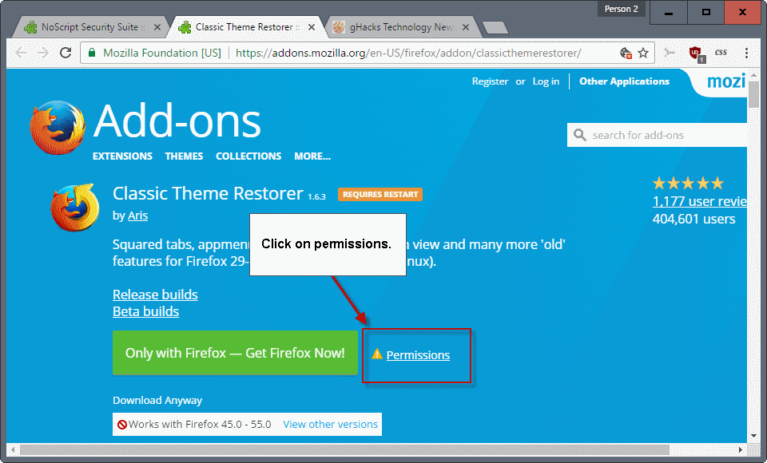
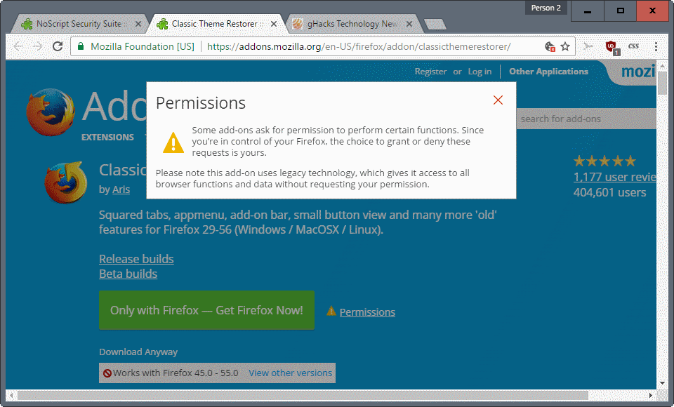

So, by now you have probably heard that a major change is coming this year to the Firefox add-on ecosystem.
In a nutshell, Mozilla will scrap all legacy add-ons and move the add-on system exclusively to WebExtensions.
The net effect is that legacy add-ons won't work anymore when the change comes -- it is planed for Firefox 57 which Mozilla plans to release in November 2017. Firefox 52.x ESR will support legacy add-ons until at least the next release cycle, so at least until early 2018.
One of the core issues with the move is that WebExtensions are still being worked on as we speak. Mozilla releases APIs regularly, last time in Firefox 52 Stable for instance, but some are not complete yet or even started.
For users, it means that any add-on that is not a WebExtension will stop working when Firefox 57 is installed on a device. For developers, it means that they have to turn their add-ons into a WebExtension if they want to continue its development and make it available on Mozilla AMO. That is, if all the APIs are available for that.
As a user, you are probably wondering whether the add-ons that you have installed in the browser are legacy add-ons, or WebExtensions.
There is no simple way of finding out unfortunately. The built-in add-on manager does not reveal whether the installed add-on is a legacy add-on or a WebExtension.
Legacy add-on, or WebExtension

There is a way to find out however, and it is offered on the Mozilla website. The method is not super comfortable unfortunately, as you have to check each add-on individually.
This may not be a huge issue if you run one or two, but if you run dozens or more, you will spend some time checking add-ons.
Here is what you need to do
- Visit the Mozilla AMO website and find an add-on that you want to check. Use the search, browse, or maybe use the bookmarks if you saved all your add-ons.
- Locate the permissions link once you are on the add-on's page, e.g. the Classic Theme Restorer page. It is listed next to the download button right now.
- This opens an overlay screen on the page that provides you with information on the add-on, including whether it is a legacy add-on or not.

A prompt that states the following is a legacy add-on. This means that it won't be usable once Mozilla makes the switch:
Please note this add-on uses legacy technology, which gives it access to all browser functions and data without requesting your permission.
Note: This permissions link has been placed there in preparation for the add-on permissions system that Mozilla will introduce in Firefox.
This does not necessarily mean that the developer of the add-on won't release a WebExtension version of it.
So, you may want to check back in a couple of months, or before you run the update to Firefox 57, to find out a WebExtension version is available at that point in time.
You may also dig deeper, for instance by following development of add-ons more closely. Many developers have homepages, GitHub project pages, or are active in forums or on Mozilla's add-ons site.
You can find out about the plans there, or ask questions to find out whether the developer plans to migrate the add-on to a WebExtension.

Now you can determine whether you get an actual, powerful add-on which will have an impact on how you work with the browser and how you access content or a dumbed down non-add-on which can only change the color of a button from blue to red or maybe block some ads. Very good. I will see to it that I grab the final versions of my legacy add-ons in XPI form for later usage.
The paragraph where Mozilla tries to scare people by telling them that the add-on can do anything to the browser is absolute nonsense by the way. The code of the most popular legacy add-ons was already made public years ago and everyone (including experts) had the chance to take a look at it. If something malicious was in there it would have surfaced by now. Again: Total nonsense on Mozilla's part. People actually VALUE the abiity of those add-ons to access the browser core, because otherwise they wouldn't even exist in the first place.
The only reason I'm with Firefox still is NoScript and the download panel (because I prefer that to a full window). If that stops working, I have Chrome already set up, so all I have to do is import bookmarks.
When the time comes for the switch will existing add-ons simply switch over behind the scene, or will the user need to uninstall them, and reinstall the new version? I've seen some extensions on the Add-on page say that they are legacy, and to follow a link to a new WebEx version. That makes me think all existing ones will just stop working until replaced by the user with the new ones. That would really suck as some basic users don't know about this as I have friends that I've set up with certain ones, and configured them a certain way. If they just stop, and the new ones need re-configuring, that really sucks.
Seeing what WebExtensions are able to do the impact on such users should be low. Uninstalling AdBlock Plus and reinstalling it is not exactly rocket science. Actual, powerful add-ons won't be possible anyway and will stop working forever.
Thanks, this should help a bit (though I already think that my some of my favorite and most needed add-ons won't survive).
None of my installed add-ons are ready, including NoScript, which I have heard will be ported. So I suppose it's too early to know.
I really feel like punching Mozilla in the nuts, repeatedly.
Agree!
It's only fair, since that's what they've been doing to us recently.
FF should present a list and keep it updated of what is what and which add ons will be dismissed. It's probably too simple and does not look bombastic enough since pompousness and opaqueness rules this industry.
If it was the only thing not asking for your permission... the internet, you know this public place... is full of leeches. Sometimes for good reasons, most of the time just to track you, your wallet. Time to reinvent another internet, you know this public place without virus, malware, leeches or companies like Mozilla Corp always trying to put lipstick on a pig.
Every single one of my addons will break when Mozilla kills XUL addons. Of all my addons, only one (Lastpass) has a webextensions version. I've tried it and it is absolutely terrible. Very slow performance.
I can find alternatives or simply live without all my addons except Firegestures. I can't live without fully functional mouse gestures. If Firegestures dies with Webextensions, I will be forced to either switch to a firefox fork like Palemoon or hope that Vivaldi adds the gesture functionality I need.
It's a sad state of events, and portends Firefox's death. That's a shame, because without Firefox the web really only has one player-- Webkit.
To find out if an installed add-on is a legacy one or a Webextension there is also another method,
1- In about:config search for extensions.webextensions.uuids ;
2- Copy that value to a text editor; reformat 1 per line with a carriage return after each comma;
3- Open about:support if necessary to find the add-on's name corresponding to its uuid found above.
I have at this time 80 add-ons of which 6 are Webextensions.
Thank you!
There's an even easier way to do it.
1. Open the extensions manager with Ctrl+Shift+A and click the link to "More".
2. Click the URL to take you to the extension on the Mozilla site.
If there's a black exclamation mark in a yellow triangle it's legacy while no triangle means it's a Webextension.
Here's an example of a Webextension: https://addons.mozilla.org/en-US/firefox/addon/webmail-ad-blocker/?src=ss
And here's a legacy flavor: https://addons.mozilla.org/en-US/firefox/addon/https-everywhere/?src=ss
Nice. I found two uuids which are nowhere in the list of add-ons in about:support. Any ideas what they might belong to ?
"We are Mozilla. We are building you a new car. If you don't switch to one of our competitors or use our old car, you will be stuck with this new car. Your new car doesn't have a steering wheel, gas pedal, wheels, windows, or doors yet, but we will maybe include some of those as we build your new car. None of your current vehicle accessories will work in your new car. You won't be able to use your nice seat covers anymore, you won't be able to plug in any of your devices, and don't even try to use your trusted air freshener hanging on your rear-view mirror. Oh, and your new car won't have any cup holders. We don't promise to have your new car completed when we deliver it to you, but we won't be supporting your old car anymore. Your new car won't look as nice as your old car, and it won't have many of the features you love. But we are Mozilla, and we do what we want without asking you first."
The sad but true reality if that most FF user base doesn't matter about the car details: the wheel, the pedals, the windows, the seats.
So FF will not lose any one of such users.
Permissions
Ageless, Privacy Badger, X-notifier (for Gmail,Hotmail,Yahoo,AOL ...)
Legacy
BetterPrivacy, Blur, BugMeNot, Bulk Image Downloader, CanvasBlocker, Classic Theme Restorer, Clean Links, Cleanest Addon Manager, Copy All Links, Copy Link Text, Desktop Notifications for Android, Disconnect, Download Status Bar, DownThemAll!, Duplicate This Tab, EasyAccent, Emoji Cheatsheet, Emoji Everywhere, Fasterfox, Flagfox, FoxClocks, Hoxx VPN Proxy, HTTPS Everywhere, Imagus, KeeFox, Loading Bar, Location Guard, Mobile Barcoder, New Tab Tools, Nimbus Screen Capture, NoScript Security Suite, OpenAttribute, Prevent Tab Overflow, Print Edit, Privacy Settings, Private Tab, RequestPolicy, Restart, S3.Google Translator, Screengrab (fix version), SCs Currency Converter, Self-Destructing Cookies, Session Manager, SiteDelta, Textarea Cache, The Addon Bar (Restored), TinyURL Generator, Tweak Network, uBlock Origin, WebFilter Pro
... who needed add-ons anyway
@Tom Hawack
many thanks Tom, the method that you described revealed that Ghostry and Disconnect.me are both webextensions
@Tom
hey buddy, if you're reading this please see my last comment here
//www.ghacks.net/2015/08/18/a-comprehensive-list-of-firefox-privacy-and-security-settings/
I'd appreciate if you could help me out here, please. thanks.
I think that I will do the same thing I have already done during the transition to signed addons: I will stay at FF 52 until it will be possible, and in the meantime I hope that developers will complete the re-writing of their addons.
I'm a bit worried about 4 or 5 of them, because I'm unable to imagine how could be browsing internet without them.
Yeah, Tree-Style Tabs is legacy, so while Firefox gained a user when Chrome discontinued the experimental side-tabs feature, so too will Mozilla lose a user once they kill that very same feature.
Guess I'll have to start getting used to Vivaldi, which seems to be the only other browser with that feature.
Years ago I switched to Firefox from IE because I wanted to control my browser, eliminate advertisements and customize my browser for as much power and privacy as possible. If FF impairs or eliminates those abilities, then I will switch to another browser.
Thank you to XenoSilvano you've just saved me a tremendous amount of work. A healthy number of the extensions you list are used by myself and many of the people that rely on me to to keep their systems, browsers & etc running smoothly and as they like to work. Discussions are necessary for most as to what they want me to do for them, but most will choose to abandon FF as some features have shown up in other browsers (eg. side tabs) and most, like me, have only stuck with FF for the control they have through the add-ons. The user doesn't give two shakes of a rats patootie about "webextension compatibility" and since you can't just use chrome or opera's or go to some universal site the whole thing is moot! Sad, I'm an original Mozilla user from the earliest days.
Literally the only reason that I and all other firefox users that I know of use Firefox is for the power of its extension system. I put up with Firefox's occasional compatibility and stability problems because I can shape the browser into exactly the form I want, soon this won't be the case.
When it comes to extensions from now on Chrome will be king. Chrome has had web extensions for years, it has a richer selection of more mature web extension plugins and so will take Firefox's place as the browser with the best extension ecosystem so that's where you'll find me.
I don't know anyone who wants to switch to a less stable and compatible browser so that they can have access to a smaller number of slower less powerful extensions, and soon, I expect neither will Mozilla.